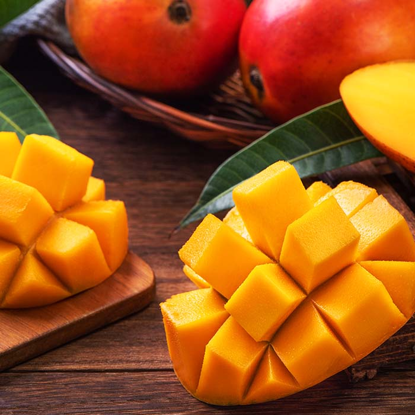
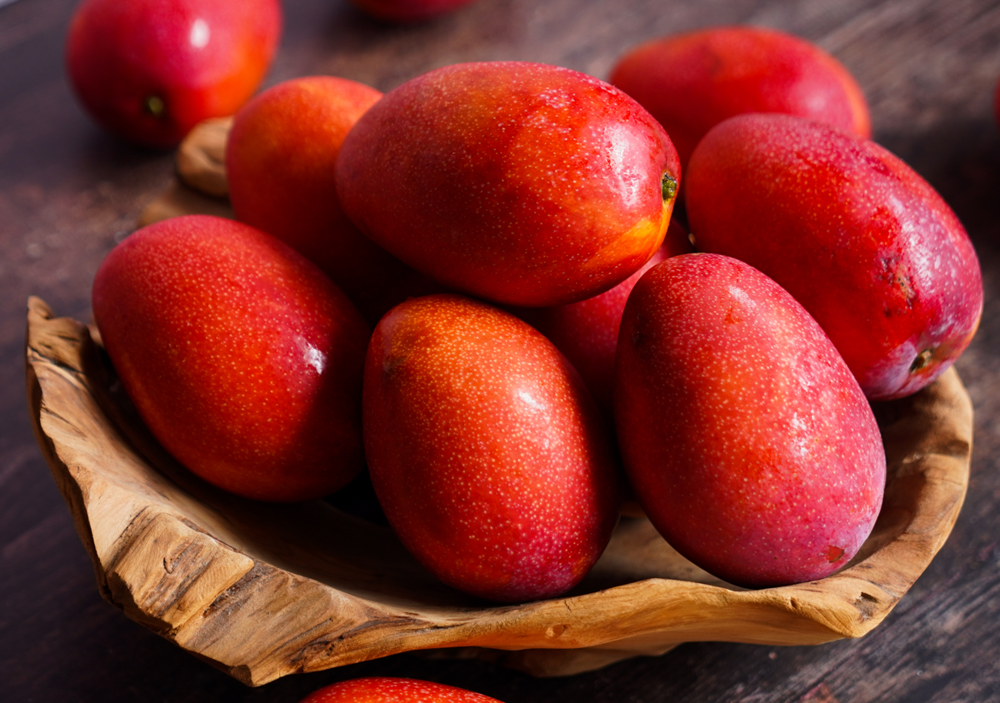

我最喜歡的水果-愛文芒果
愛文(Irwin)芒果
於西元1954年由農復會自美國佛羅里達引進，因產量穩定不易隔年結果，頗受生產者歡迎。植株可高達4公尺，但為方便栽培管理作業，鼓勵果農進行矮化作業，將植株高度矮化至2.5公尺以下。愛文為臺灣芒果栽培之主力品種，亦是芒果外銷之主力品種。

產期與賞味期限
產期5～7月，花穗紅色，小花黃色，新梢暗紅色，30天後轉綠；
果實紅色，外表色澤鮮艷，皮薄肉細，纖維中等，味香多汁，酸甜有風味。
不耐炭疽病為其最大缺點，果實在採收後之櫥架壽命較短，容易發生炭疽病病斑，使果皮產生黑點，降低商品價值。發病初期表示成熟度已充足，應盡快品嚐。

愛文芒果食譜
愛文芒果優格：將新鮮芒果切塊，搭配無糖優格，適合早餐或健康點心。
芒果糯米飯：搭配椰奶與糯米，為泰式經典甜點。
芒果冰沙：與冰塊、蜂蜜、椰奶打成果汁，清涼消暑。
愛文芒果沙拉：與生菜、堅果、起司、油醋醬搭配，增添清爽風味。
芒果海鮮塔：搭配鮭魚、干貝或蝦仁，提升鮮甜口感。
芒果蛋糕或派：適合作為甜點，搭配鮮奶油與酥皮。
資料來源: